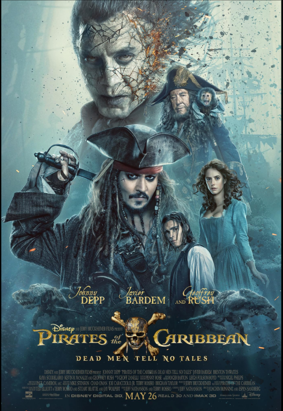
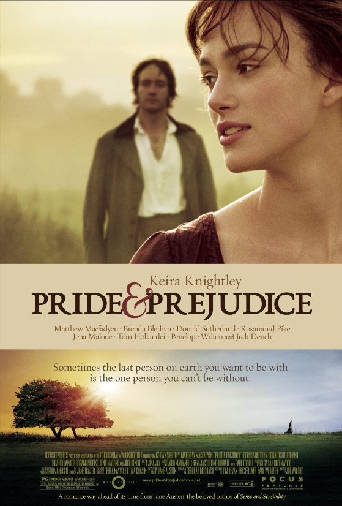
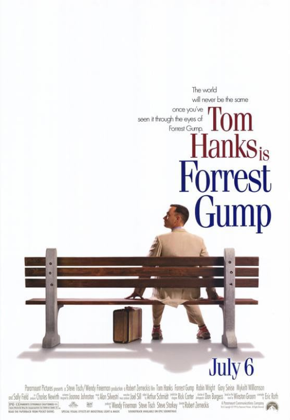
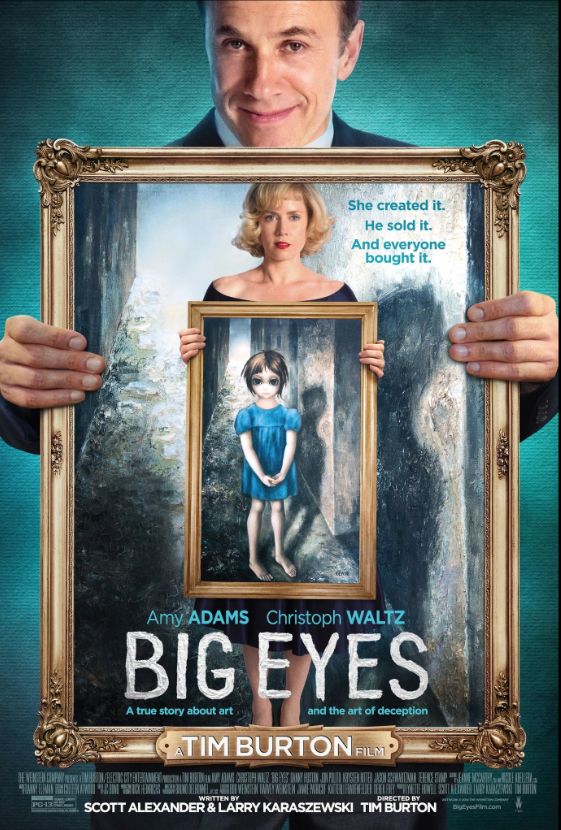
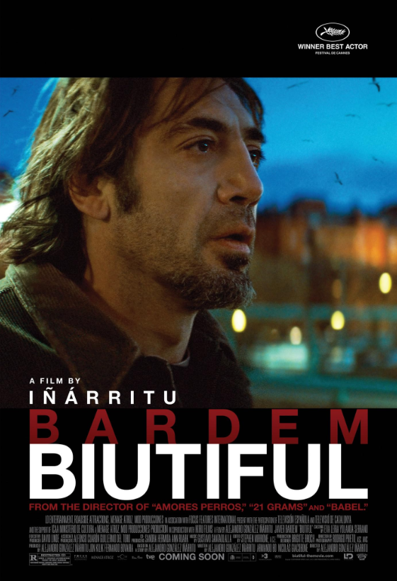

Kaya Scodelario
debutant

Pirates of the Caribbean
action/adventure/fantacy
6,5/10
Carina Smyth
Captain Jack Sparrow searches for the Trident of Poseidon
to rule the sea while being pursued by old rival Captain Salazar and a crew
of deadly ghosts who have escaped from the Devil's Triangle. Captain Jack's only hope of survival lies in seeking out the legendary Trident of Poseidon.
0 wins
0 nominations
Keira Knightley
oscar winner

Pride & Prejudice
drama/romance
7,8/10
Elizabeth Bennet
Sparks fly when spirited Elizabeth Bennet meets single,
rich, and proud Mr. Darcy. But Mr. Darcy reluctantly finds himself falling
in love with a woman beneath his class. Can each overcome their own pride and prejudice? The story is based on Jane Austen's novel about five sisters.
2 wins
4 nominations
Tom Hanks
oscar winner

Forrest Gump
drama/romance
8,8/10
Forrest Gump
Forrest Gump is a simple man with a low I.Q. but good intentions.
He is running through childhood with his best and only friend Jenny.
His 'mama' teaches him the ways of life and leaves him to choose his destiny.
Forrest joins the army for service in Vietnam.
2 wins
3 nominations
Penélope Cruz
oscar winner
Vanilla Sky
fantacy/romance/mistery
6,9/10
Sofia Serrano
A self-indulgent and vain publishing magnate finds
his privileged life upended after a vehicular accident with a resentful lover.
David Aames Jr. is telling the story of how he got to where he is to McCabe,
the police psychologist. The mysterious man in the restaurant may be able to shed some light on David's confusion.
1 win
4 nominations

Amy Adams
oscar nominated

Big Eyes
biography/crime/drama
7,0/10
Margaret Keane
A drama about the awakening of painter Margaret Keane,
her phenomenal success in the 1950s, and the subsequent legal difficulties
she had with her husband, who claimed credit for her works in the 1960s. Margaret was a woman trying to make it on her own after leaving her husband with only her daughter and her paintings.
0 wins
6 nominations
Javier Bardem
oscar winner

Beautyful
drama/romance
7,4/10
Uxbal
Uxbal, single father of two children, finds his life in chaos
as he is forced to deal with his life in order to escape the heat of crime in
underground Barcelona, to break with the love for the divorced, manic depressive, abusive mother
of his children and to regain spiritual insight in his life as he is diagnosed with terminal cancer.
1 win
4 nominations